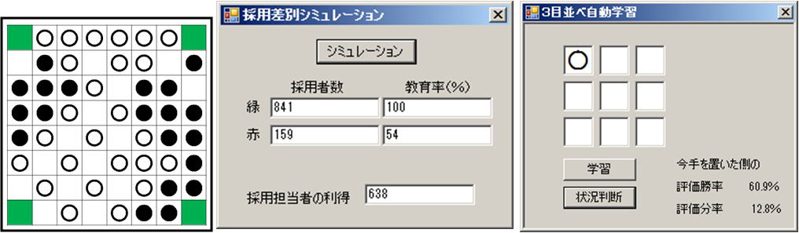

『分野横断的な研究技術としてのプログラミング・統計学』
(東京大学教養学部において行った講義を基に発展させ、Web上に再現)
とつげき東北


↑このページ作者の著書。
基本的に「頭が良くなる本」。
気になったらクリック！
本家Webサイトはこちら
0．たいせつなこと
このページは、「とつげき東北の好意により、無償で」みなさんが学習できるように作られています。
とはいえ、動画編集等は外部委託していますので、お金がかかっています。
そこで、自己負担だけではなく、協力者の方から実費で対価をいただいております。以下に、協力者の方を紹介いたします。
ご覧いただく方は、協力者の方への感謝を忘れずに活用していただければ幸甚です。
【協力していただいた方リスト】
・投資的クレカ生活（クリックするとサイトに飛べます）
・朝日 なずな（クリックするとツイッターに飛べます）
概要
プログラミングのスキル、加えて統計学に関する基本的な知識は、理学や工学のみならず、法学、経済学等における研究を行う際に極めて重要な、場合によっては必須の「武器」となります。
それにもかかわらず、これらのスキルは、自発的に取り組まない限り、高校生までの段階でほとんど学習する機会がなく、また大学に入ってからも必ずしも体系的に学ぶことができないのが現状です。
逆に言えば、難しい大学入試をくぐりぬけてきた学生でも身につけている人が少なく、大学の早い段階から習得すれば、周囲を圧倒する研究技術を養うことが可能です。
また、プログラミング等のスキルは、問題解決能力としてだけではなく、問題発見能力として非常に優れた機能を持っています。
ある現象があったとき、仮にそれを解けるかもしれない技術を持っていれば、即座にそれを「問題」として正確に定義し、解を求めようという姿勢になれます。技術がなければ、それを問題として認識することさえできないのです。
研究にとどまらず、企業等においてもこれらの知見を活かすチャンスはたくさんあります。今回用いるVisual
Basicという言語は、企業でよく使われているOffice製品において、ほぼ同じ文法で使える「VBA」という言語に非常に似たものです。
また、単に研究ができる、仕事ができる、というだけでなく、プログラミング技術は一生ものの知的な趣味ともなります。
プログラミング・統計学等の技術の獲得は、今や、大学生にとっての「基本的な教養」であり、これらを身につけないまま卒業することはあってはならないことだと考えています。
講義内容
ボウリングのスコアのばらつきシミュレーション、あみだくじが公平になるための横線と縦線の関係モデル、人種差別の行動経済学、シェリングの分居モデル、機械学習、暗号理論などを題材に取り上げる予定です。

講義のレベル、対象
もともとメインとしていたのは、東京大学の教養学部（前期）の学生です。
プログラミングに関する知識がない、または自らプログラムを組むことが充分にできない方、研究の課題を見つけることができない方を対象としていました。
今回は、受講生に高校卒の女性や無職のおじさんを入れることによって、より誰にでもわかりやすく、役立つものを目指します。
なお、「プログラミング＝理系」というイメージは古いです。文系の学生こそ、プログラミングを覚えていかないと専門性がなくなってしまいます。
プログラムの面白さ、身近な事柄から研究課題を発見することの楽しさを伝えるとともに、実際にコーディングが可能となるよう実践的な講義を行います。
使用する言語
VisualBasic.net、VBAを基本的な言語として用います。これは、
・興味を持った学生が、すぐに家のPCで無償でプログラムを始める開発環境や機会を与えること
・1つのプログラミング言語を学ぶことで、他の言語は比較的容易に習得できるようになること
・大学卒業生は必ずしも研究機関で働くわけではないことから、一般企業等に就職した場合にも利用可能な言語が望ましいこと
を考慮して決定しています。
※動画は、試行錯誤で撮っているので、一部つながっていなかったり等ありますが、ご容赦ください。
（資料は、お手元にダウンロードしてください）
資料１（動画１～３に対応）
資料２（動画１～３に対応）
資料３_説明（動画４に対応）
資料３_問題（動画４に対応）
資料４_問題（動画５問題に対応）
特別編資料１（功利主義についての動画を見た後に考えるべき様々な問題と宿題）【このレベルをやれば、哲学科でかなり斬新な大学院修士論文が書けます。共同研究したい学生さんは連絡を】
特別編資料２（スクレイピング用エクセルサンプル（.xlsm））
開発環境の導入【はじめにやってください】
本来は動画の中で説明していますが、そのバージョンがもう使えないようになっているため、ここで最初にやってください。
具体的なやり方はこちら（後に動画にします）
一応動画で説明したものを急遽作りました。こちら。
質問やわかりにくい点がありましたら、Twitterで質問を受け付けます。
なお、全てに回答可能かはわかりませんのでご容赦ください。
リンク
とつげき東北Twitter